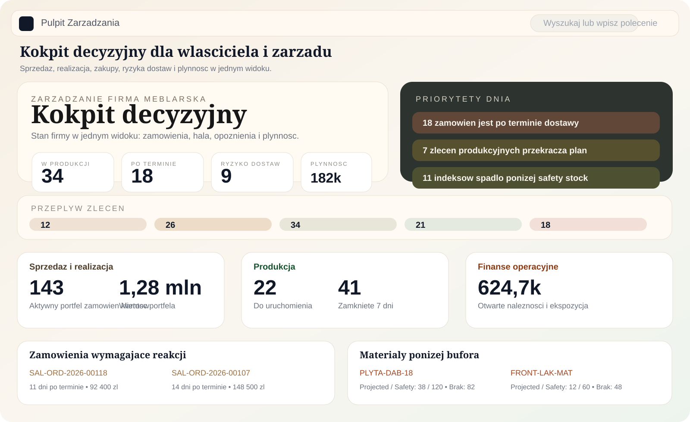
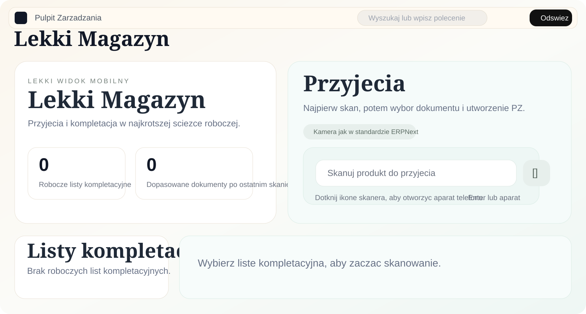
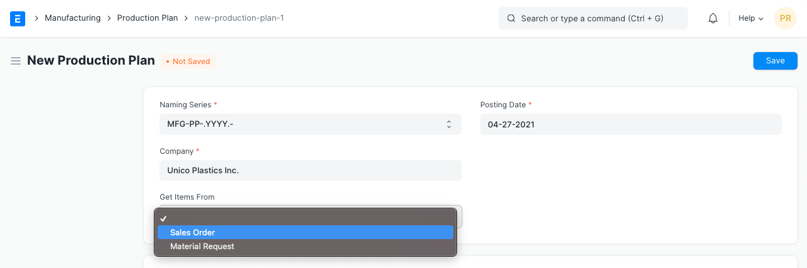
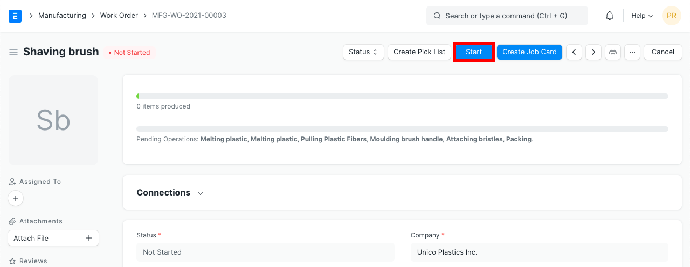
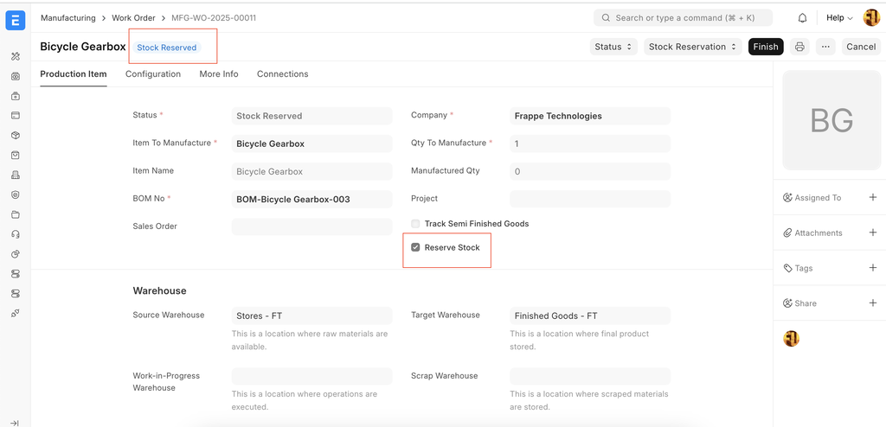
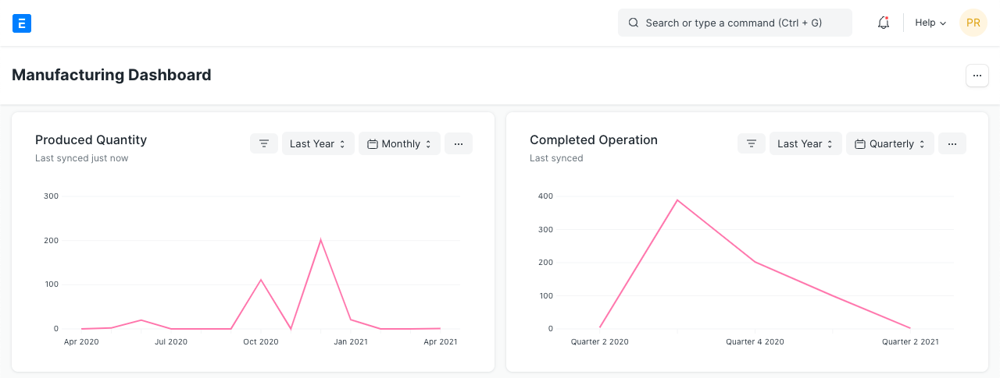

Prosty start dla produkcji, nie pełny projekt dla złożonego zakładu
Produkcja Mini jest przeznaczona dla firm, które chcą uporządkować podstawowy proces produkcyjny w ERPNext w oparciu o proste Work Order + BOM, bez wchodzenia od razu w ETO, rozbudowane operacje, planowanie obciążenia maszyn i szerokie automatyzacje.
- 4-8 tygodni realizacji
- 1 zakład produkcyjny
- Chmura w cenie
- Bez integracji zewnętrznych
Jak wygląda system w praktyce


Referencyjne widoki ERPNext v15 i v16




Wariant procesu do wyboru
MTO - produkcja na zamówienie
Pakiet dla firm, które uruchamiają produkcję na podstawie konkretnego zamówienia klienta i chcą panować nad kolejką realizacji oraz terminami wydań.
MTS - produkcja na magazyn
Pakiet dla firm, które produkują pod zapas i chcą uporządkować prosty przepływ między planem, stanem magazynu i realizacją na hali, ale bez prognozowania i automatycznego sterowania zapasem.
Zakres pakietu Produkcja Mini
Proces i konfiguracja
- przygotowanie systemu do obsługi prostego procesu produkcyjnego opartego o Work Order + BOM
- uruchomienie wariantu MTO albo MTS
- proste sterowanie realizacją bez rozbudowanego MRP i bez planowania obciążenia maszyn
- konfiguracja podstawowych obiegów magazynowych dla produkcji
Role i interfejsy
- pracownik produkcji: lista zadań na dziś oraz start/stop
- zarząd: kokpit z realizacją, planowaniem i ryzykami
- magazynier: lekki interfejs operacyjny
Migracja i użytkownicy
- kontrahenci, adresy, produkty, kategorie, magazyny, BOM-y i cenniki
- profile dla ról: Zarząd, Planista, Magazynier, Pracownik Produkcji, Handlowiec, Zakupowiec
- migracja tylko na podstawie poprawnych plików dostarczonych przez klienta
- 2-3 szkolenia modułowe: Produkcja, Magazyn, Sprzedaż
Zakres funkcjonalny - w cenie
1.1. Produkcja
- konfiguracja BOM w wersji prostej i jednopozcyjnej
- Work Orders - zlecenia produkcyjne
- Production Plan w formie podstawowej
- Gantt View w standardowym widoku bez customizacji
- proste raporty: WIP, Status Work Orders, Material Shortages
- dedykowany widok ERPtech z listą prac dla pracownika produkcji, możliwy do prezentacji na ekranie lub tablecie
- standardowa obsługa rezerwacji materiałów
1.2. Magazyn
- konfiguracja magazynów, lokalizacji i składnic
- przyjęcia, wydania i przesunięcia
- dedykowany widok mini od ERPtech dla magazyniera, uproszczony do minimum z opcją skanowania telefonem
- podstawowe stany minimalne
- proste śledzenie partii - opcjonalnie
- standardowe raporty magazynowe
1.3. Zakupy
- Supplier i Supplier Price List
- Purchase Order i Purchase Invoice
- prosta ścieżka zamówienie do przyjęcia
1.4. Sprzedaż
- Customer i Price Lists
- Quotation, Sales Order i Sales Invoice
- powiązanie zamówień sprzedaży z produkcją: SO do WO
1.5. Księgowość - wersja podstawowa
- podstawowy plan kont
- standardowa konfiguracja podatku VAT
- powiązanie dokumentów sprzedaży i zakupów z kontami
- podstawowe księgowanie bez pełnej księgowości polskiej
1.6. Dane początkowe
- import danych podstawowych z CSV lub Excel
- lista produktów do 300 pozycji
- klienci i dostawcy
- magazyny i jednostki miar
1.7. Szkolenia
- 3 moduły szkoleniowe online albo onsite
- Produkcja + Magazyn
- Sprzedaż + Zakupy
- Księgowość podstawowa
- nagrania ze szkoleń, jeśli szkolenie odbywa się online
1.8. Dashboardy i raporty podstawowe
- konfiguracja 2-3 dashboardów
- status produkcji
- stan magazynów
- sprzedaż i zakupy
1.9. Ustawienia systemowe i administracyjne
- role i uprawnienia dla podstawowych profili
- konfiguracja wydruków w zakresie kosmetycznym: logo, dane, nazwy kolumn
- konfiguracja użytkowników i podstawowych powiadomień
Co jest dopuszczalne w wersji mini
Dashboardy i raporty
- 2-3 proste dashboardy: produkcja, sprzedaż, zapasy
- podstawowe raporty operacyjne dostępne w standardzie ERPNext
- checklista podstawowych testów po konfiguracji
Interfejs i formularze
- drobne Customize Form bez logiki biznesowej
- porządkowanie widoków dla ról i podstawowych pól
- lekki interfejs dla magazynu i pracy operacyjnej
Księgowość i moduły pomocnicze
- konfiguracja kont i podstawowych raportów
- powiązanie z fakturami w standardowym zakresie ERPNext
- włączenie modułów HR lub CRM bez rozbudowanych procesów
Dla kogo ten pakiet ma sens
Mała i średnia produkcja
Pakiet jest przygotowany dla firm, które chcą ruszyć z ERP bez budowania od razu pełnego programu transformacji procesowej.
Jeden zakład i prosty proces
Najlepiej sprawdza się tam, gdzie produkcja jest relatywnie prosta, a technologia nie wymaga wielu poziomów zależności.
Brak integracji MES/WMS
To dobry wariant, gdy firma nie musi od razu łączyć ERP z zewnętrznymi serwisami, urządzeniami lub dodatkowymi systemami hali.
Warunki wejściowe
Dane startowe
Klient dostarcza poprawne pliki do migracji w uzgodnionym formacie. Pakiet nie obejmuje czyszczenia dużych wolumenów danych historycznych ani długiej historii dokumentów, stanów, BOM-ów i danych projektowych.
Decyzyjność po stronie klienta
Potrzebna jest osoba, która potwierdzi docelowy wariant MTO lub MTS, strukturę użytkowników i podstawowe słowniki procesowe.
Model infrastruktury
Domyślnie wdrażamy pakiet w chmurze producenta lub ERPtech. Instalacja na infrastrukturze klienta jest możliwa za dodatkową opłatą.
Czego pakiet nie obejmuje
- ETO - Engineering To Order
- integracji z zewnętrznymi serwisami i urządzeniami
- zaawansowanych routingów, operacji i stanowisk
- planowania obciążenia maszyn
- wielopoziomowych BOM-ów
- MRP i zaawansowanego planowania
- MTS z prognozami i automatyzacją zapasów
- wynagrodzeń pracowników produkcji
- integracji księgowych: Subiekt, Optima, enova
- integracji e-commerce: Woo, Shopify, Allegro
- integracji z maszynami, wagami, skanerami i IoT
- API i webhooków
- migracji faktur
- migracji zleceń sprzedaży
- migracji zleceń zakupu
- migracji zleceń produkcyjnych
- Power BI, Metabase i niestandardowych raportów SQL
- layoutów druków tworzonych od zera
- wieloetapowych workflow z akceptacjami
- zaawansowanego routingu dokumentów i automatycznych powiadomień
- skryptów serwerowych, auto-replenishment, auto-submission i auto-assign
- nowych DocType'ów, własnych formularzy, zmian w core ERPNext i aplikacji Frappe App
- pełnej księgowości polskiej
- integracji KSeF, raportów JPK i zaawansowanych podatków
- zaawansowanego HR, list płac i obiegu urlopów
- rozbudowanego CRM z lead scoringiem i rekrutacją
- wielodniowych warsztatów procesowych, nagrań video i train the trainer
- pełnego UAT z wieloma iteracjami i mapowania Value Stream
- custom developmentu i raportów niestandardowych
- drugiej fali wdrożenia
- rozbudowanych automatyzacji
- pełnej migracji historii operacyjnej
Co można dokupić do pakietu
Instalacja on-prem
Instalacja na serwerach wewnętrznych klienta: dopłata +2000 zł netto.
Wsparcie po starcie
Po wdrożeniu można dobrać pakiet wsparcia konsultacyjnego albo rozliczenie godzinowe.
Druga fala wdrożenia
Rozszerzenie o kolejne role, dodatkowy zakres procesu albo integracje wyceniamy jako osobny etap.
Najczęstsze pytania
Czy 45 000 zł netto to cena końcowa?
Tak, dla zakresu opisanego na tej stronie. Dodatkowe prace, druga fala wdrożenia albo instalacja on-prem są rozliczane osobno.
Czy pakiet działa zarówno dla MTO, jak i MTS?
Tak. Na starcie wybieramy jeden z dwóch wariantów: MTO - produkcja na zamówienie albo MTS - produkcja na magazyn. W wariancie MTS nie wchodzi jednak prognozowanie ani automatyzacja zapasów.
Czy chmura jest częścią pakietu?
Tak. W cenie jest instalacja w chmurze producenta lub ERPtech. Instalacja na serwerach klienta wymaga dopłaty +2000 zł netto.
Jak wygląda migracja danych?
Migrujemy dane startowe wskazane w zakresie pakietu, ale klient musi dostarczyć poprawne pliki w uzgodnionym formacie. Pakiet nie obejmuje pełnej historii dokumentów, stanów i danych produkcyjnych z lat wstecz.
Czy można rozszerzyć pakiet o integracje lub bardziej zaawansowaną logikę?
Tak, ale wtedy nie udajemy już wersji mini. Integracje, bardziej rozbudowane workflow, nowe DocType'y i dodatkowe aplikacje przechodzą do osobno wycenianej drugiej fali.
Sprawdź, czy Produkcja Mini pasuje do Twojego procesu
Jeśli masz prosty proces produkcyjny i chcesz zamknąć wdrożenie w przewidywalnym zakresie, pokażemy czy ten pakiet wystarczy, czy lepiej od razu zaplanować szerszy wariant.